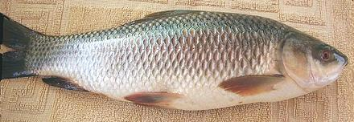

Rohu

[Rohu, Rohu labeo (India & elsewhere); Labeo rohita]
This fish, native to the rivers of South Asia, is very popular in
Pakistan, Thailand, Bangladesh and northern India, especially in
West Bengal. It can grow to over 6 feet and 99 pounds, but is
generally marketed much smaller. It is farmed in Karala state, India
and has been introduced to other regions for stocking reservoirs and
aquaculture. It is Red List rated LC (Least Concern).
Photo by Khalid Mahmood distributed under license
Creative Commons
Attribution-ShareAlike v3.0 Unported.
More on the Carp Family.
The flesh of Rohu is white, tender, smooth in texture and mild with
practically no "fishy" taste. Just about anyone should find it enjoyable
- but, Rohu does, like all carp, have a "spine problem" similar to
Milkfish (Bangus), a fish in a related
order. Some find the spines rather annoying, but unlike those of the
milkfish they are impossible to remove before cooking. To enjoy delicious
carp Americans just have to learn to deal with the spines at the table
like the rest of the world does. If you don't want to deal with them,
use catfish instead (unless you're an observant Jew or Muslim -
catfish isn't kosher or halal).
Personally I don't have a problem with the spines. As with most fish
I eat carp with chopsticks, breaking it up as I go along. The spines are
are easy to find that way. In India, this fish, like everything else,
is eaten with the fingers, so they have no problem finding and removing
the spines there either. In any case, do provide a small bowl or some
other way for your guests to dispose of the spines. Even in formal
Victorian society it was permissible to remove fish bones from the mouth
(but nothing else).
There's no need to skin Rohu, but some picky eaters just won't
eat skin, so you may want to serve filets skin side down so such people
can leave it on the plate easily, or you can easily peel it off after
cooking.
Buying:
At this time, Rohu is not available in
North America, where carp isn't as widely popular as it is in most of
the world. The Asian Silver Carp that now infests the Mississippi basin
(and is available live in Asian markets here in Los Angeles) is an
excellent substitute. The Common Carp, also widely available, can be
used as well. The larger the fish you buy, the less problem dealing
with the spines in the flesh.
Cooking:
Most cooking methods suitable for a
large fish can be used for Rohu. It remains firm enough to steam and
pan fries just fine with a light dusting of rice flour. It is tender, so
while simmering for 10 to 15 minutes is fine, a rapid boil or much longer
cooking is likely to break it up.
Do Not
cut carp into pieces smaller than about 2 inches on a
side. Doing so makes the spines nearly impossible to deal with.
Scales:
Rohu is completely covered
with large scales. Adhesion is moderate so they're not hard to scrape
off, but they are springy so they'll fly around a bit. They curl as
they dry so they're not difficult to clean up, but make sure they don't
get into your drains, they could cause a clog.
Cleaning:
This fish is fairly easy to clean, just cut
from the vent right up to the underside of the jaw (you'll need kitchen
shears from the pelvic fins forward) and pull stuff out. There's a big
two chamber swim bladder but it comes out easily and the gills are fairly
easy to pull out. The one obstacle is the throat which contains a
grinding mechanism that's not real easy to pull out.
Skin:
Rohu skin does not shrink badly when cooked. It
has no strong or objectional flavors, so it hardly seems worth the bother
to remove it. If you insist, Rohu fillets can be skinned fairly easily
using the standard long knife and cutting board
Method.
Fillet:
This fish is easy to fillet with plenty of bones
to follow. It is one fish where I fillet the flesh off the ribs rather
than cut them loose and deal with them on the fillet. They're easy to
follow and carp bones are stuck in hard and difficult to pull.
Yield:
Yield should be pretty much like Common Carp and
Silver Carp, fillets about 47% skin-on and 41% skin-off.
Soup Stock:
Carp heads, fins and bones make a
serviceable medium flavored stock, and you could probably toss in
skins as well. There is very little oil - but you should separate what
there is and discard it (use your gravy separator).
sf_carprohz* 140605 - www.clovegarden.com
©Andrew Grygus - agryg@clovegarden.com - Photos
on this page not otherwise credited © cg1
- Linking to and non-commercial use of this page permitted